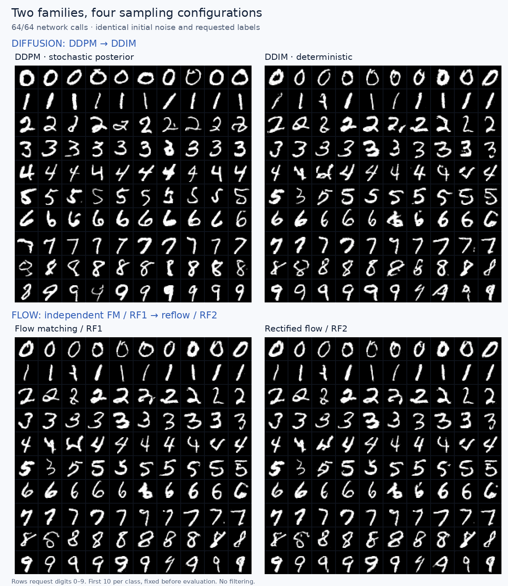

A learning series · Code, experiments & intuition
From 0 to
Video Generation.
Understand what happens between noise and a generated sample. Build the foundations step by step, then move toward Transformers, scalable training, and video.
01 / Available now
Two roads from
noise to digits
DDPM → DDIM
Flow Matching → Reflow
One conditional U-Net. Shared starting noise. Real MNIST experiments with counted network evaluations.
Read the full tutorial →
What “from 0” means here
Start from zero experience implementing a generative model. You should already be comfortable with Python, tensors, neural networks, and basic gradients. The first chapter explains the training loop, objectives, and samplers in detail.
The current experiments generate images; the animations show their sampling trajectories. Video generation is the destination of the series. The later stages below are planned.
The learning path
Build one idea at a time.
- 01Available
Generative modeling from scratch
Noise prediction, velocity prediction, DDPM and DDIM sampling, flow matching, and reflow. Learn to read training code and compare experiments fairly.
Includes: 13-section tutorial, sampling animation, source audit, evaluation report, and reproducible code.
Open chapter → - 02Planned
From U-Net to Diffusion Transformers
Patch tokens, time and class conditioning, attention, and a small DiT trained from scratch.
Target: training code, loss curves, generated samples, and controlled ablations.
- 03Planned
Make training scale
Distributed training, mixed precision, activation checkpointing, and profiling.
Target: measured throughput, memory use, communication costs, and correctness checks.
- 04Planned
From images to video
Video representations, spatiotemporal attention, positional encoding, and temporal consistency.
Target: a video generation training or fine-tuning experiment with a technical walkthrough.
- 05Planned
Efficient video generation
Explore adaptive sampling and the relationship between computation, visual quality, and temporal consistency.
Target: a research prototype and reproducible comparisons.
Read · Watch · Reproduce
The foundations toolkit
Full tutorial →
Equations, training code, samplers, experimental controls, and reproduction commands.
02 · CompareResults & animation →
Grouped model comparisons, actual sampling trajectories, and diagnostic curves.
03 · InspectSource-code audit →
Three reference implementations, pinned commits, and the differences that matter.
04 · ReproduceDownload materials ↓
ZIP · 24.4 MiB. Article, code, media, metadata, and loss histories. Model weights and dataset cache are excluded.
Machine-readable evaluation report · Browse the source on GitHub